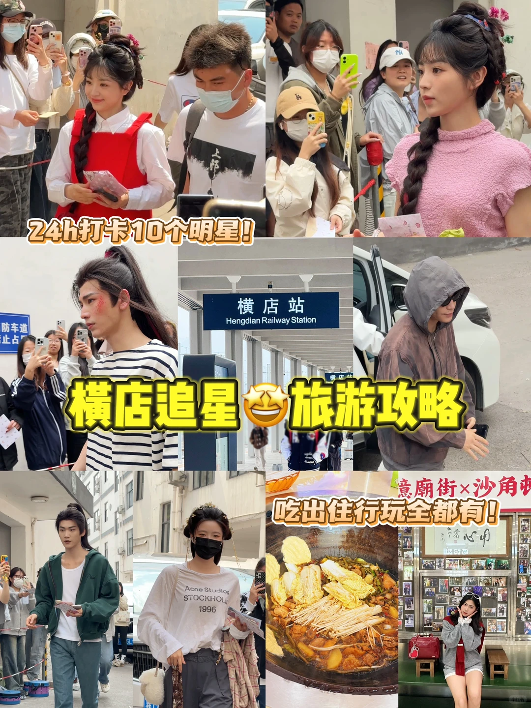
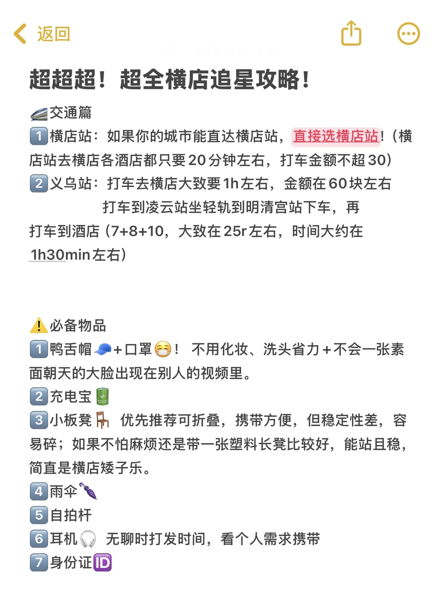
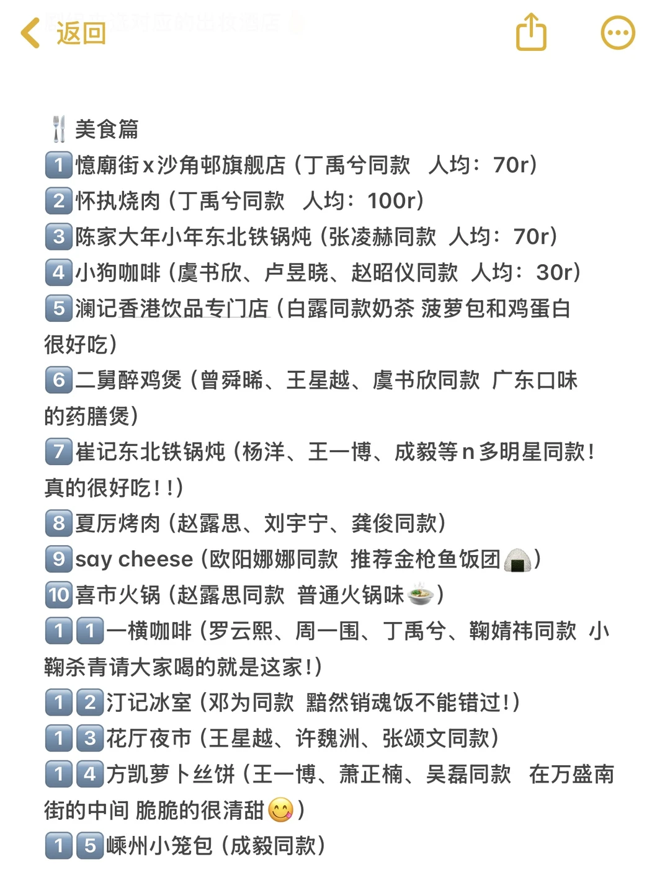
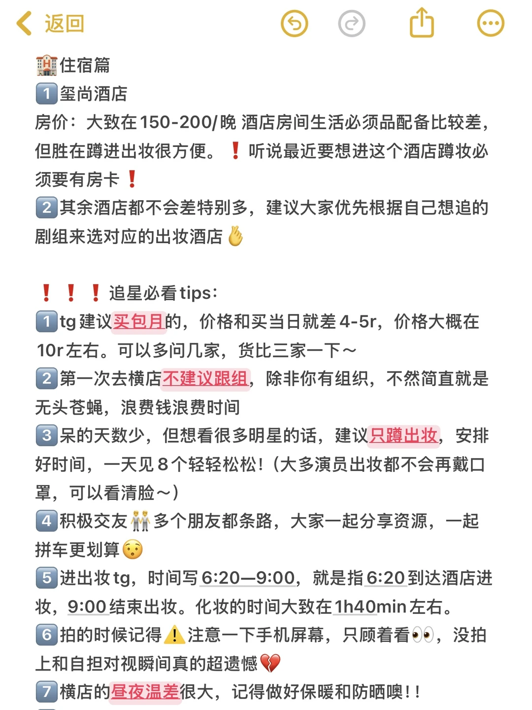
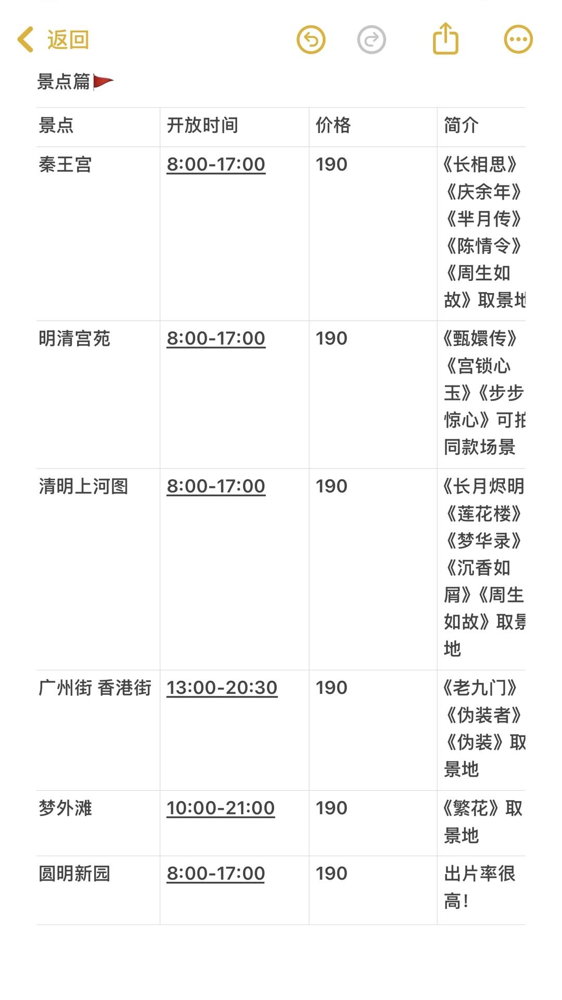
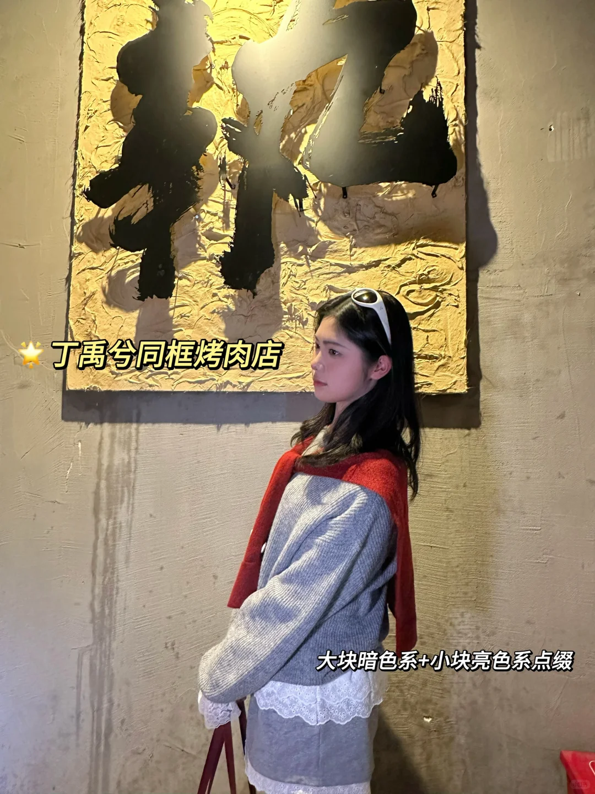
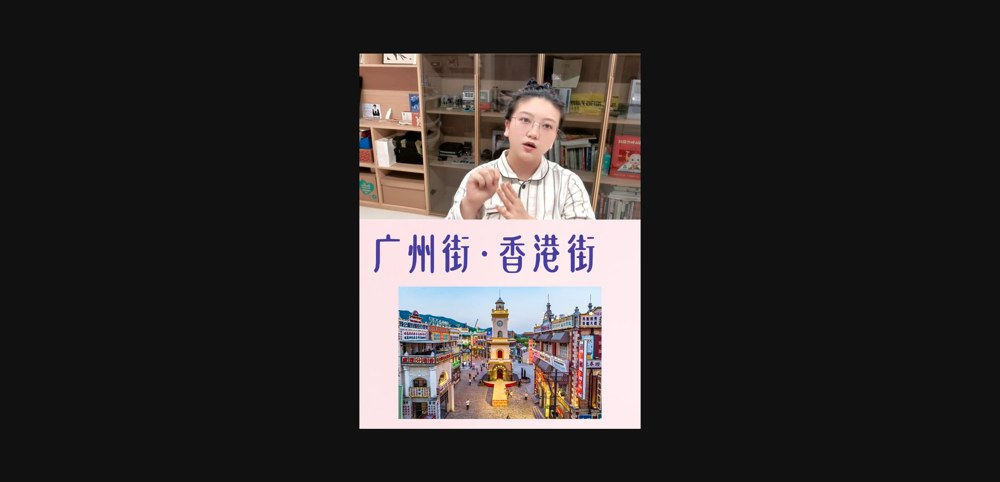

08:30
秦王宫
拍中宫门、王宫广场、城墙和四海归一殿；演出优先看《龙帝惊临》类室内体验。
Hengdian 2-Day Guide
纯旅行主线，追星玩法作为可选加项。Day 1 用秦王宫 + 清明上河图 + 梦幻谷夜场打满经典体验；Day 2 用明清宫苑 + 广州街香港街补齐宫廷剧和民国港风。
| 天数 | 推荐路线 | 适合谁 |
|---|---|---|
| Day 1 | 秦王宫 -> 清明上河图 -> 梦幻谷夜场 | 第一次去横店、想看大场景和夜间演艺的人 |
| Day 2 | 明清宫苑 -> 广州街香港街 -> 万盛街/返程 | 宫廷剧/港风民国街景/拍照党 |
| 追星可选 | 早出妆/晚收工 + 景区压缩游 | 目标剧组明确、愿意牺牲部分景点的人 |
拍中宫门、王宫广场、城墙和四海归一殿；演出优先看《龙帝惊临》类室内体验。
别吃太撑，下午还要走路；可选镇上简餐或景区附近小吃。
虹桥、水街、市井街区、码头/桥景，适合宋制写真和慢拍。
先玩项目，傍晚开始卡演出时间，重点留给大演艺。
想吃同款店，选离酒店近的，不跨镇折腾。
午门/宫殿/御花园/红墙机位，宫廷剧氛围最强。
万盛街/镇中心，吃东阳沃面、金华酥饼、土菜或同款餐厅。
骑楼、旧香港街、民国街景、港风灯牌；傍晚更有氛围。
补拍、买小吃、吃晚餐；若返程，留足到横店站时间。
开放时间和价格会随淡旺季、夜场和剧组拍摄调整，出行当天以横店影视城公告为准。
| 园区 | 开放/价格 | 人少时段 | 拍照攻略 | 推荐动线/取景 |
|---|---|---|---|---|
| 秦王宫 | 8:00-17:00；原图价格 190，官方预订页常见约 155 | 早上 8:00-10:00、午饭时段人少。 | 中宫门正面、王宫广场低机位、城墙俯拍、四海归一殿纵深。 | 大门和广场 -> 四海归一殿 -> 城墙/宫道 -> 《龙帝惊临》类体验。 |
| 明清宫苑 | 8:00-17:00；原图价格 190，官方预订页常见约 155 | 一开园或 15:30 后更适合拍空景。 | 午门/宫门中轴、红墙拐角、宫殿门洞、御花园。 | 午门 -> 中轴线 -> 后宫区域 -> 御花园 -> 红墙机位。 |
| 清明上河图 | 8:00-17:00；原图价格 190，官方预订页常见约 145 | 上午 8:30-10:30 或 15:30 后更舒服。 | 虹桥、水街、码头、市井街巷、船/桥倒影。 | 虹桥 -> 汴河水街 -> 市井街区 -> 码头/桥景。 |
| 广州街香港街 | 13:00-20:30；原图价格 190 | 15:30-17:30 光线柔和；18:30 后灯牌亮起。 | 钟楼广场、骑楼街、港式招牌、码头/电车感街道。 | 建议 Day 2 下午到傍晚，不要上午硬排。 |
| 梦幻谷 | 原图 10:00-21:00；夜场/季节时段会变化 | 16:00 后入园性价比高。 | 夜景灯光、游乐设施、演出水火效果。 | 先玩项目 -> 卡《暴雨山洪》《梦幻太极》类演出 -> 夜景散步。 |
| 梦外滩 | 10:00-21:00；原图价格 190 | 傍晚到夜晚更出片。 | 老上海街、洋楼门廊、复古车/路牌、霓虹灯。 | 喜欢老上海风可替换 Day 2 的广州街香港街。 |
| 圆明新园 | 8:00-17:00；原图价格 190 | 上午人更少，面积大，适合慢逛。 | 湖面、长廊、欧式建筑、水边倒影。 | 两天优先级低于四个经典区，适合第三天加。 |
| 分类 | 建议 | 来源/校对 |
|---|---|---|
| 到达 | 能直达横店站就选横店站；横店站到镇上酒店约 20 分钟，打车常见不超过 30 元。 | 小红书图片攻略；官方地址为浙江省东阳市横店镇。 |
| 住宿 | 纯旅行建议住镇中心/官方酒店；追星可按目标剧组出妆酒店选。 | 小红书图片攻略。 |
| 追星 | 第一次不建议盲目跟组；目标明确时优先蹲出妆，安排好时间。 | 小红书图片攻略。 |
| 必带 | 鸭舌帽、口罩、充电宝、小板凳/折叠凳、雨伞、自拍杆、耳机、身份证。 | 小红书图片攻略。 |
| 类型 | 可选 | 怎么安排 |
|---|---|---|
| 正餐 | 憶廟街 x 沙角邨旗舰店、怀执烧肉、陈家大年小年东北铁锅炖、崔记东北铁锅炖、夏厉烤肉、喜市火锅 | Day 1 夜宵或 Day 2 午/晚餐；优先选离酒店近的。 |
| 咖啡/饮品 | 小狗咖啡、澜记香港饮品专门店、一横咖啡、汀记冰室 | 下午转场休息。 |
| 小吃 | 金华酥饼、东阳沃面、嵊州小笼包、方凯萝卜丝饼、花厅夜市 | 不要全塞进景区，镇上吃更灵活。 |
| 项目 | 参考费用 | 建议 |
|---|---|---|
| 门票 | 秦王宫约 155、明清宫苑约 155、清明上河图约 145、梦幻谷约 215；套票/酒店套餐更常见。 | 优先买白天 3 大景点 + 梦幻谷或含住宿套餐。 |
| 住宿 | 150-500/晚/间，节假日上浮。 | 两天时间短，地理位置优先。 |
| 交通 | 横店镇内打车/接驳约 50-150/两天。 | 两人以上短打车比绕公交更划算。 |
| 总预算 | 普通版约 900-1,400/人，不含往返大交通。 | 若追星加妆造/写真/同款店，再加 200-600。 |
来自图文攻略、视频抽帧和用户补充原图。






